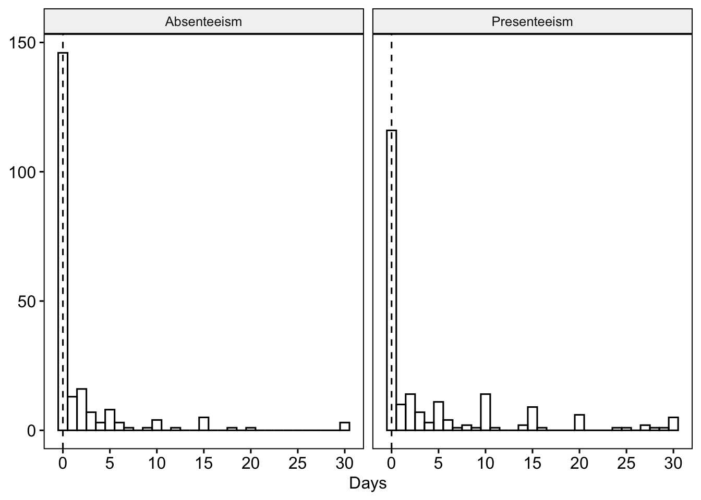

Variable | Statistic | p |
|---|---|---|
Age | 0.946 | 0.000 |
Agency Years | 0.883 | 0.000 |
Alcohol Use Risk | 0.933 | 0.000 |
Other Drug Use Risk | 0.452 | 0.000 |
Psychological Distress | 0.649 | 0.000 |
Absenteeism | 0.949 | 0.000 |
Presenteeism | 0.840 | 0.000 |
Negative Binomial Hurdle Models with Zero-Heavy Count Data
Modelling Alcohol and Other Drug Use, Psychological Distress, and Occupational Functioning in Australian Public Safety Personnel
slowly converting this into a doc from my analyses notes (full script at bottom of page to come)
Aims
- Examine rates of severity of alcohol and other drug (AOD) use among public safety personnel (PSP)
- Examine associations between AOD use, psychological distress, and occupational functioning (absenteeism and presenteeism) among PSP
- Examine whether AOD use and psychological distress predict impairment to occupational function, both independently, and in combination
Key Variables
- Psychological distress (K10):
k10_total&k10_total_interpretation - alcohol and other drug use (ASSIST):
alcohol_use_scores&alcohol_use_interpretation/max_other_drug_score&max_drug_use_interpretation - Workplace Outcomes:
k10_11_absenteeism&k10_12_presenteeism
Potential covariates:
genderageagency_years
Data Pre-processing
- excluded cases with no response to the first assist item,
assist1_string, as these cases did not complete the self-assessment - parsed multi-response string items from
assist1_stringinto binary indicators for each substance - treated non-endorsement of use as missing (
NA) and not zero - calculated risk scores across for each ASSIST substance
- set total scores to
NAfor substances never used to avoid conflating with “low risk” - calculated interpretation for alcohol and other drug use seperately
- calculated total k10 score
- calculated k10 interpretation
- exclude responses prior to 11 march (pre-implementation/test responses)
- set implausible ages to NA
Derived:
- binary indicators of recent AOD use (past 3 months) (alcohol and other drug use seperately)
- poly-drug use indicator
- count of substances used in past 3 months
- maximum other drug (not alcohol) risk score (bc the self-assessment personalised feedback was based on that)
- other drug use interpretation
- psychological distress total score
- psychological distress interpretation
KM and I decided that we don’t need the poly-drug use indicator, or counts of substances used. Rely on risk scores (only get risk score if used in last 3 months, otherwise 0 if used in lifetime, otherwise NA if never)
Screening
- tested normality for all continuous outcomes and predictors (shapiro-wilk)
- use non-parametric tests (kruskal wallis) for any group comparisons (risk category as group)
Absenteeism and presenteeism both have strong right skew and a large proportion of zeros

note: suggests standard linear models would be inappropriate. count-based better?
Prevalence and severity
- prevalence of recent use by substance
- categorised ASSIST risk thresholds per substance
- exclude “other” and “smoking”
- compare demographics, psych distress, and functioning across risk groups
- stratify by alcohol risk
- stratify by other drug risk
- kruskal wallis for continuous vars (have non-normal distributions)
- chi square or fisher’s exact for categorical vars
ASSIST scores | |||||||
|---|---|---|---|---|---|---|---|
Low risk | Moderate risk | High risk | |||||
Substance | Total using | n | % | n | % | n | % |
Alcohol | 216 (98.2%) | 77 | 35.6 | 83 | 38.4 | 56 | 25.9 |
Amphetamines | 23 (10.5%) | 5 | 21.7 | 16 | 69.6 | 2 | 8.7 |
Cannabis | 28 (12.7%) | 6 | 21.4 | 20 | 71.4 | 2 | 7.1 |
Cocaine | 27 (12.3%) | 12 | 44.4 | 13 | 48.1 | 2 | 7.4 |
Hallucinogens | 18 (8.2%) | 4 | 22.2 | 12 | 66.7 | 2 | 11.1 |
Inhalants | 14 (6.4%) | 6 | 42.9 | 6 | 42.9 | 2 | 14.3 |
Opioids | 12 (5.5%) | 5 | 41.7 | 6 | 50.0 | 1 | 8.3 |
Sedatives | 26 (11.8%) | 7 | 26.9 | 18 | 69.2 | 1 | 3.8 |
- alcohol use nearly everyone (substantial amount of spread across risk levels)
- other substances way lower, but still prevalent, and predominantly moderate risk (though it’s pretty hard to get low risk the way other drug use is scored)
- high risk for other drugs isn’t too common
- some substances (cannabis, amphetamines, sedatives) show strong skew toward moderate rather than low risk
for modelling, use maximum other drug score rather than modelling each drug individually
summary based on alcohol risk:
Characteristic | n | Low Risk | Moderate Risk | High Risk | p |
|---|---|---|---|---|---|
Gender, n (%) | 197 | .027 | |||
Man or male | 30 (26.8%) | 52 (46.4%) | 30 (26.8%) | ||
Woman or female | 35 (45.5%) | 21 (27.3%) | 21 (27.3%) | ||
Other | 1 (25.0%) | 2 (50.0%) | 1 (25.0%) | ||
Prefer not to answer | 1 (25.0%) | 0 (0.0%) | 3 (75.0%) | ||
Age, Mean (SD) | 187 | 37.2 (11.2) | 42.8 (12.9) | 40.6 (9.7) | .024 |
Agency years, Mean (SD) | 196 | 8.0 (7.9) | 12.9 (9.7) | 10.8 (9.8) | .006 |
Psychological distress, Mean (SD) | 202 | 18.9 (7.7) | 20.9 (6.8) | 25.4 (7.2) | <.001 |
Absenteeism, Mean (SD) | 200 | 1.3 (4.3) | 1.4 (4.1) | 3.2 (5.7) | <.001 |
Presenteeism, Mean (SD) | 200 | 4.4 (8.5) | 2.0 (4.3) | 7.6 (9.0) | <.001 |
- higher alcohol risk is associated with greater psychological distress and higher absenteeism and presenteeism
- age and years in the agency are higher in moderate/high risk groups
post hoc dunn tests with bonferroni correction show:
- differences are mostly driven by low vs. moderate or high grps
- few differences between moderate vs high (except for psychological distress and absenteeism/presenteeism)
other drug use summary:
Characteristic | n | Low Risk | Moderate Risk | High Risk | p |
|---|---|---|---|---|---|
Gender, n (%) | 61 | .112 | |||
Man or male | 8 (22.2%) | 26 (72.2%) | 2 (5.6%) | ||
Woman or female | 6 (30.0%) | 13 (65.0%) | 1 (5.0%) | ||
Other | 0 (0.0%) | 2 (66.7%) | 1 (33.3%) | ||
Prefer not to answer | 1 (50.0%) | 0 (0.0%) | 1 (50.0%) | ||
Age, Mean (SD) | 59 | 41.2 (12.4) | 37.7 (12.1) | 32.6 (8.6) | .382 |
Agency years, Mean (SD) | 61 | 11.2 (11.9) | 8.5 (6.6) | 5.0 (3.0) | .501 |
Psychological distress, Mean (SD) | 61 | 19.7 (7.7) | 24.6 (8.4) | 34.2 (10.6) | .011 |
Absenteeism, Mean (SD) | 61 | 0.7 (1.4) | 2.3 (3.6) | 10.2 (11.9) | .037 |
Presenteeism, Mean (SD) | 61 | 3.6 (5.2) | 7.2 (9.0) | 8.4 (8.7) | .440 |
Note. pvalues are from Kruskal-Wallis tests for continuous variables, and Chi-squared for categorical variables. Bolded values indicate statistically significant differences at p < .05 | |||||
Model selection
Given the distributional properties of absenteeism and presenteeism, I considered several candidate models:
- Poisson regression
- Negative binomial regression
- Zero-inflated Poisson (ZIP)
- Zero-inflated negative binomial models (ZINB)
- Hurdle negative binomial models
Considerations:
Overdispersion: Poisson models assume that the mean = variance. Preliminary checks indicated overdispersion, making Poisson models unsuitable.
Excess zeros: The data contained more zeros than expected under standard count models. This raises 2 choices:
- Zero inflated models: assume two latent groups (always-zero vs always at-risk)
- Hurdle models: assume a two-stage process (zero vs positive counts)
Here I made a function that ran a series of univariate models on each outcome to check dispersion This helped to evaluate which count model handled the outcome data the best. Univariate predictors included age, gender, years of employment, k10 total score, maximum alcohol use risk score, and maximum other drug use risk score.
Models were compared using: AIC/BIC (fit), dispersion stats, vuong tests, predicted vs observed zeros.
Although zero-inflated models and hurdle models were basically the same, MS and I discussed the choice from a conceptual angle, and we agreed that the zero-inflation was too rigid with the “always-zero” or “always at-risk” approach.
Given we are looking at absenteeism and presenteeism, days of each is unlikely to be always.
So we chose Hurdle Negative Binomial Models.
Reasons:
- they count for overdispersion
- explicitly model the probability of any absenteeism/presenteeism (logistic) and the frequency of absenteeism/presenteeism among those who didn’t have zero values (count)
- conceptually, they distinguish between whether someone is absent and how often they are absent.
- more aligned with our aims/RQs
Modelling
Univariate models - Hurdle
Once Hurdle Models were chosen, each predictor was first examined in isolation to:
- identify potential associations
- understand variable-specific effects
- identify which covariates to include in multivariable analysis
Insights:
absenteeism: